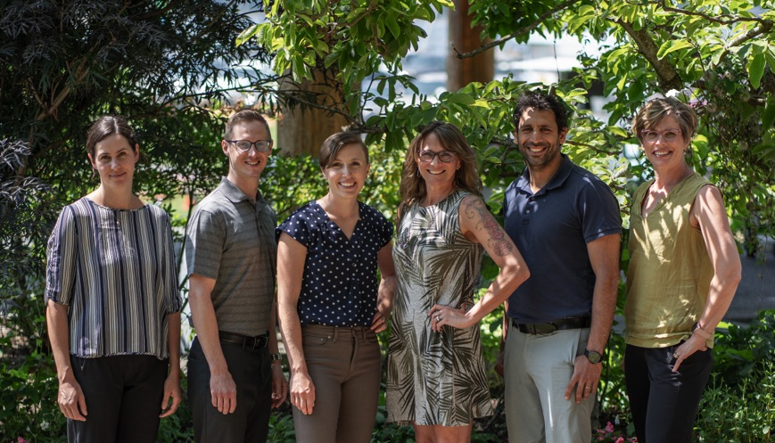

Welcome
Ascent Physiotherapy is a full service physiotherapy clinic located in Comox, BC. We offer Physiotherapy, including Manual/Manipulative Therapy, IMS, Acupuncture, Radial Shockwave Therapy and exercise prescription including Personal Training to the residents of the Comox Valley and surrounding area.
Physical Therapy
A comprehensive approach to restoring movement and function, alleviating pain, and improving overall mobility through personalized exercises and techniques.
Manual and Manipulative Therapy
Hands-on techniques designed to improve joint mobility, reduce muscle tension, and enhance overall physical function.
Intramuscular Stimulation (IMS)
A therapeutic technique using fine needles to target tight muscle bands, relieve chronic pain, and improve mobility.
Acupuncture
A traditional and evidence-based treatment using fine needles to stimulate specific points, promoting natural healing and pain relief.
Radial Shockwave Therapy
A non-invasive treatment that uses acoustic waves to accelerate tissue repair, reduce pain, and treat chronic soft tissue injuries.
Worksafe BC
Specialized services for workplace injury recovery, helping patients return to work safely and efficiently.
ICBC
Tailored rehabilitation services for individuals recovering from motor vehicle accidents, ensuring optimal recovery and support.
Treatment for TMJ Dysfunction
Therapy aimed at relieving jaw pain, improving movement, and reducing tension in the temporomandibular joint.
Myofascial Release and Craniosacral Therapy
Gentle techniques focusing on releasing tension in the fascia and promoting relaxation and pain relief.
Sports Therapy
Specialized care for athletes to enhance performance, recover from injuries, and prevent future issues.
Athletic Taping/Bracing
Techniques designed to provide support, stability, and injury prevention during physical activities.
Take the First Step to Better Health
Ready to start your journey to recovery and wellness? Book an appointment today and let us help you achieve your goals with personalized physiotherapy care.
Book an Appointment